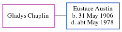

Edna Maud Austin (née Larcombe) 1920 - c1994
[ Home ] | [ Calendar ] | [ Surnames Index ] | [ Errors ] | [ Family History ]Edna Larcombe, the wife of Aubrey Bryon Austin (the third cousin once-removed on the father's side of Nigel Horne), was born in Kingston, Surrey, England on 15 Oct 19201,2. She married Aubrey (a lorry driver) in Surrey, England around Nov 19403, which is also where she died c. Nov 19942.
Citations
- England & Wales births 1837-2006 - Findmypast
- England & Wales deaths 1837-2007 - Findmypast
- England & Wales Marriages 1837-2005 - Findmypast
Media
England & Wales births 1837-2006 - BMD/B/1920/4/AZ/000877/152
England & Wales deaths 1837-2007 - BMD/D/1994/12/79994005
England & Wales marriages 1837-2005 - BMD/M/1940/4/AZ/000935/090
Family Tree
Map
Generated by ged2site. Last updated on Jul 3, 2024
Known Issues
No records of living with anyone
1939 UK register information missing